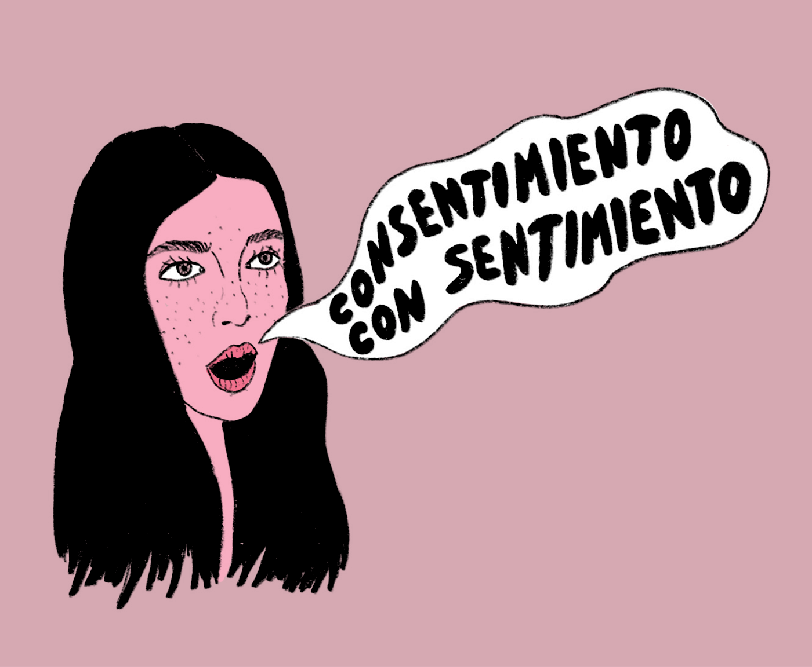
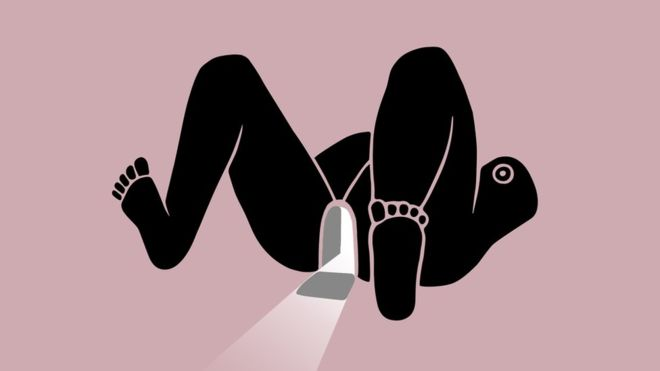

Pussypedia: A Bilingual, Body-Positive, Inclusive Digital Space
by

Pussypedia is a free, diverse, inclusive, and beautiful community-sourced project launched this year by cofounders Zoe Mendelson and María Conejo with the help of over 200 global volunteers from three different continents.
It’s also completely bilingual - in both Spanish and English, which puts Pussypedia into a league of its own. We’re excited to be connected with them at Scarleteen because they represent a new generation of reproductive justice and sexual health pioneers: intersectional, inclusive and unafraid to challenge old paradigms!
Who knew that a discussion with an ex-boyfriend about squirting would set Zoe on a quest across the internet in search of trustworthy, fact-based sexual health information about her body? (Not Zoe!) This elusive search eventually inspired Zoe and Maria to create Pussypedia. I had a conversation with Zoe to find out more.
Where did you grow up and where’s home for you now?
I grew up on the north side of Chicago. I went to college at Barnard in New York and studied Urban Planning. I stayed after I graduated and worked for the city. After that, I started writing and I moved to Mexico where I started doing some ad agency work and my own projects, like a data narrative about drones and a few other things that I just did for fun. My last big project was Pussypedia and that has been the last two years.
What took you to Mexico?
My dad and grandfather grew up in Chicago but moved to Mexico. We’re white Jews. Everyone thinks I look Latina but I’m not. There’s actually a big Jewish community here. Fun Fact: the current Mayor of Mexico City, where I live, is also Jewish.
How did you build your site?
I wanted to make Pussypedia, but I didn't know how. I shopped it around. I tried to get sponsors, but nobody would touch it. Around that time, I was doing a fundraiser after the earthquake in Mexico City, selling these tote bags [for it], and ended up meeting a woman from from Kickstarter who invited me to sell the bags for a new campaign on the platform called “Mexico Creates.” I was honest with them and told her I didn’t really want to do that, but I had another project (which is now Pussypedia). She said, “Let's do it!” The Kickstarter team was very helpful and guided us through the process. The night before we launched our campaign, they suggested we lower our goal. We were only looking for $8K USD (160,000 pesos), but that was considered high for a Mexican Kickstarter campaign.
We made the goal in three days. In fact, we ended up almost tripling it -- bringing our total budget to $20K USD. Although that was a lot, we realized it still wouldn’t be enough for the entire project. Originally we thought we'd make a prototype. But then we were like, “Screw it. Let's just do this.” We had 20,000 bucks which ended up being enough for a developer, the consultants, the website design, hosting...the bare bones.
The rest was and has since been the work of volunteers. We’ve partnered with 200 people from all over the world! They have volunteered their time to write, illustrate, edit content, factcheck content, translate, and consult for us on lots of different things. People have collected resources for us and have also helped produce events.
Tell us more about your cofounder, Maria. What’s her background and what was role in building Pussypedia? We were introduced by my brother and became best friends when I moved to Mexico City. I’ve always loved her art work; it confronts the stigmatization and hypersexualization of the female body while celebrating women’s sexuality. Maria’s art reflects liberation, not shame. When I called her up to ask for help with this project, she was all in!
Any other people behind the scenes we should know about?
Jackie Jahn and Michael Yap are two of our other major contributors. Jackie has a PhD in public health from Harvard where she focuses on gender issues. She designed the research process, the fact-checking process (she actually did almost all of it) and was really instrumental in making Pussypedia inclusive. Michael, who is the Head of Product Design at Etsy, led the UX design process for us.
Who did you have in mind when were designing the site? Did you have a specific user in mind?
Everyone! We literally tried to design Pussypedia to be accessible to all people. I also used my teenage self for inspiration because I had an extremely short attention span and I struggled to read long-form content (and still do). My parents were told I had learning disabilities, but I've never been formally diagnosed.
With all of those things in mind, we do our best to make sure our content is simple, non-distracting, non-triggering and at a sixth grade reading level.
One really important decision we made early on was to work with an Inclusion Consultant, Dr. Danielle Sheypuk (PhD). She’s a Clinical Psychologist, Inclusion Consultant, Disability-Advocate, TEDx Speaker and sexpert. After reviewing our site and content, she provided us with a series of recommendations and suggestions that helped us make Pussypedia more inclusive and accessible.
Our goal to be inclusive is also reflected in our writers guide. Our guidelines require plain, simple and inclusive language. The same guidelines are applied to our visuals. There’s a description of what we want our tone to be in our writers guide: Informal, but informed. Frank but friendly. Calm, but firm. Joyful whenever possible.
What inspired your choice to use the word “pussy” and the phrase “people with pussies”?
This was probably one of the important decisions we made. We wanted to make a site that was inclusive of all genders. And the word “pussy” was appealing [to us] because it doesn't have an actual anatomical definition, so it felt like a blank slate.
We saw this as an opportunity to be expansive and inclusive at the same time. For example, we were able to include testes into our definition of pussy. So far, the decision has been well received; we’ve gotten lots of positive feedback from our readers about our definition.
In your own words, what does Pussypedia uniquely offer its users?
There are a few features that make our site unique. We have an interactive, 3D model. It's an aggregation of the best of fact-checked reproductive/sexual health content available on the internet.
Another unique feature is our use of a footnote system. The purpose is to make it really easy for our readers to follow the information back to the original source(s). By doing this, we hope to empower our readers to be more informed consumers of information -- even if it’s somewhat passively. Eventually, we hope this level of care can become the standard for our readers. We want people to recognize the importance of transparency and fact-based content.
I noticed is that the content on Pussypedia isn’t just translated from English to Spanish; it’s localized and representative of the diversity within the Latinx community.
Yeah! Spanish varies so much and words often mean different things to different people based on where they’re from. We wanted people to write informally, and we wanted it to sound like their voice. The idea was to be informal, but informed.
I didn't know whether to ask people to defer to more or less localized slang. But then I was just like, screw that. Let everybody use their own. We wanted to get a wide range and a mix but with some of the scientific language being translated, we had to be really careful and more nuanced about that.
One of the many things I appreciate about Pussypedia is the integrity of your content. What criteria do you use when you’re sourcing resources for your content?
We don't blindly promote or include any and every medical journal article. We want it to be high quality content so we consider variables such as funding, the language being used, the date and accuracy, and who is publishing it. There's not really a series of hard metrics; there's a list we use when we have people looking for resources.
We have volunteers with diverse skill sets and expertise who go through and vet articles after we’ve sourced and added them. We had sex educators who helped us edit for sex-positive language. We had health and medical professionals who helped us translate medical jargon. We also had public health professionals and academics who verified the correct use and context of scientific language being translated.
How did you get connected with Scarleteen?
My dad’s ex-girlfriend knew Heather [the founder of Scarleteen] and reached out on my behalf. Then I wrote Heather and we [met up]. I knew about Scarleteen, but it wasn’t until I started trying to find reliable sources for our site and trying to curate quality content, that I understood how special and amazing Scarleteen is.
Tell us more about the development of your strategic partnership with Scarleteen and how it’s beneficial to readers?
We believe Scarleteen is truly is the best of the best, so we feel good about being able to refer our readers (who are predominantly Spanish-speaking) to a trustworthy resource. And on the flipside, Scarleteen gets to have some of their content translated by us. At the end of the day, this is all being done totally in service to our readers and the rest of the world.
It has been inspiring to to partner with Scarleteen and work up close and personal with Heather. Seeing the dedication, commitment to thoughtfulness and the standards that Scarleteen has around the content being created or shared is very helpful.
You’ve hosted a couple of translate-a-thons. What is it and what does that entail? I’m not sure who was the first to come up with the concept but it’s basically an organized meet-up where a bunch of people come together to translate text and other materials from one language to another.
Since we had a bunch of stuff that needed to be translated in a short time, I organized two meet-ups and the rest is history. The first one was dedicated to collecting resources for our site; we called it “The Great Internet Pussy Hunt.” The second was dedicated to translating some of Scarleteen’s content from English to Spanish.
Do you plan to expand or translate content into additional languages?
Yes! We're really excited and already on our way to translating our site into French. As of right now, we have 10 articles translated. I’m looking for partner publications in French that would be willing to publish Pussypedia. I’ve probably emailed every reproductive health nonprofit and every Francophone country in Africa. We also have volunteers willing to translate in Swahili.
What kind of traction have you had on the site thus far?
We’ve surpassed 300,000 unique visitors! More than half our readership is coming from Mexico. Naturally, we have visitors from Spanish speaking countries throughout Latin America, including Brazil. We’ve basically had visitors from every country in the world except for Syria, North Korea and Greenland.
Of all of those locations, which were you most surprised to see readers coming from?
Tanzania,Thailand, Vietnam and India! It made me really emotional. It's pretty wild.
What has been the biggest surprise or lesson learned so far since getting this project off the ground?
The slow, horrifying realization that I had taken on something that was massive. Way more massive than I ever thought.
What’s been the reception of Pussypedia among native Spanish speakers in Mexico, and the rest of Latin America?
It’s all been really positive. The locals are very receptive and enthusiastic but really, we’re getting a lot of love from all over and we’re so thankful.
Which resources are the most popular on your site? And why?
The discharge article is hands down the most popular for sure! I think it’s because everyone has it, but we don’t always talk about it. But it may also be compounded by the fact that the discharge illustration is awesome. Runner-ups are probably the articles about masturbation and sex.
What's your favorite thing about Pussypedia?
That Pussypedia is community-sourced. Every article is written, translated, fact-checked, edited and illustrated by a team of people. People can feel confident knowing that everything they read on our site has been reviewed by at least five people, not just one.
What’s the value to the reader of your site being community-sourced?
It's beautiful that all these people gave their time, energy and expertise to making Pussypedia a reality. Everyone contributed because they wanted it to happen for everybody. It's like one step past the Wikipedia model. I say that because of my role in curation. If you go to Wikipedia, it's an open-source content model where anyone can add to the content. Ours is more of a more coordinated process that involves quality assurance. *
Is there anything else you want the Scarleteen readers to know about Pussypedia? We want it to communicate, without any words, that we’re a resource that is anti-shame.
Pussypedia is a place where people can come to find reliable information while also experience joy and happiness. Ultimately we want people to love their bodies.
We also do little, tedious things that make a big difference. For example, we do our due diligence on authorship and make sure that all of our content is factual and up-to-date. We are committed to investing extra time and effort into tracing paraphrased content back to its original source/author. We also take into consideration if someone’s research is paid for by big pharma [pharmaceutical corporations] or if it was published independently. We do all of this so our readers don’t have to.
To learn more about Pussypedia, check out their site and/or their social media:
- Website: www.pussypedia.net
- Twitter: @pwordpedia
- Instagram: @pwordpedia
- Facebook: @pwordpedia
Editor’s note: Which is quite a lot like the Our Bodies, Ourselves model which was started back in the late 1960s!